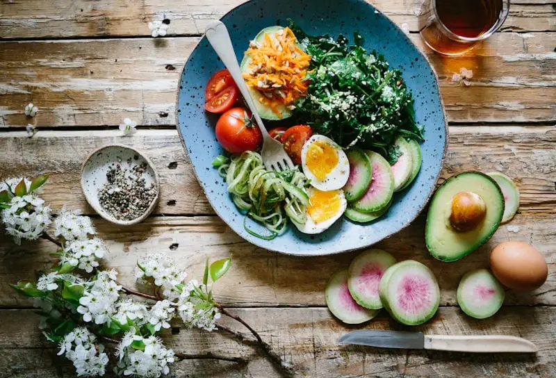

Nutrição Funcional
Coma bem.
Viva mais
leve.
Não é dieta. É uma nova relação com a comida — construída com ciência, personalizada para o seu corpo e sustentável para a sua vida.
+320 pacientes transformados nos últimos 3 anos

O que você vai conquistar
Emagrecimento saudável e sem sofrimento
Mais energia e disposição no dia a dia
Melhora do sono, humor e concentração
Relação saudável e livre com a comida